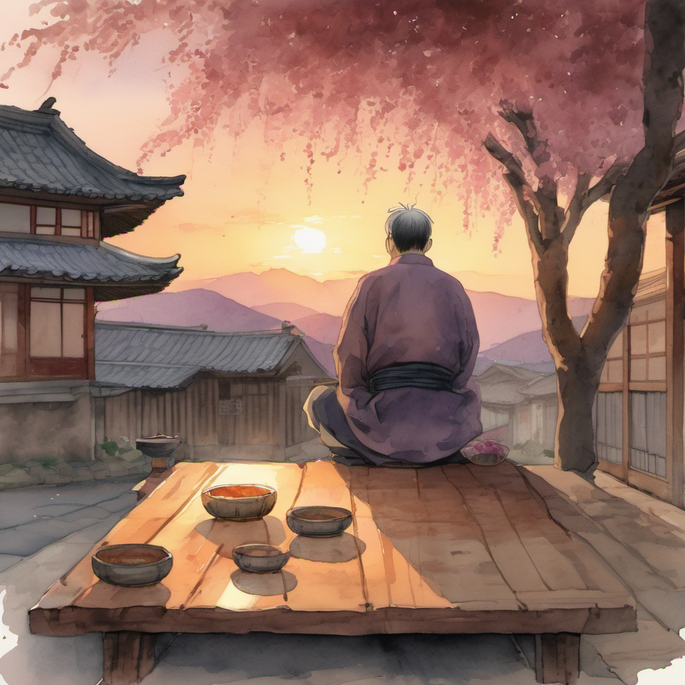
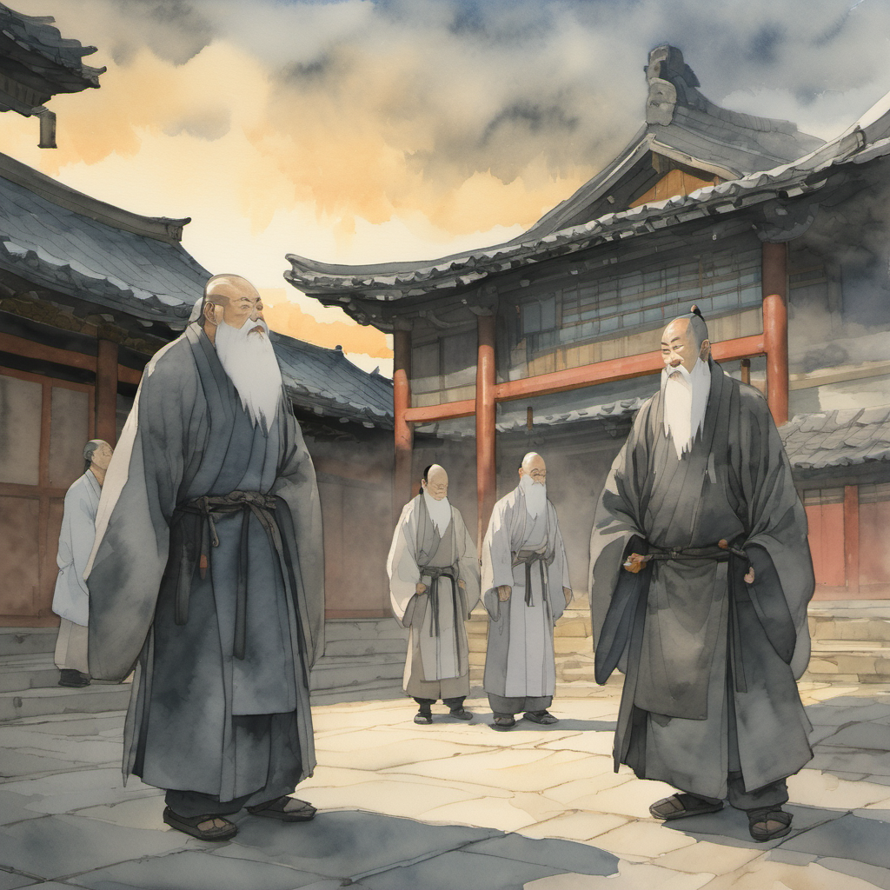
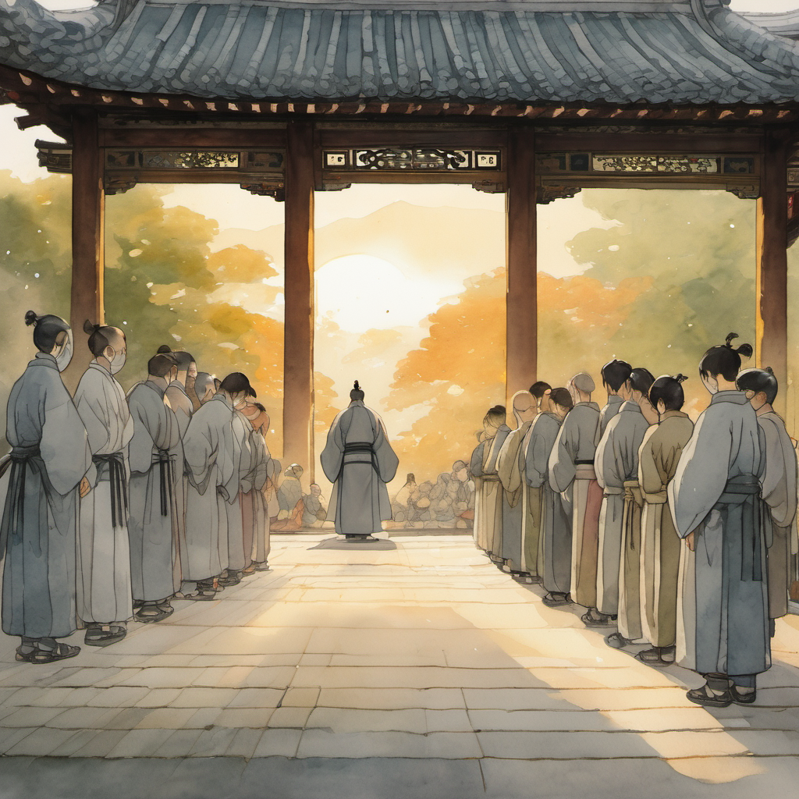
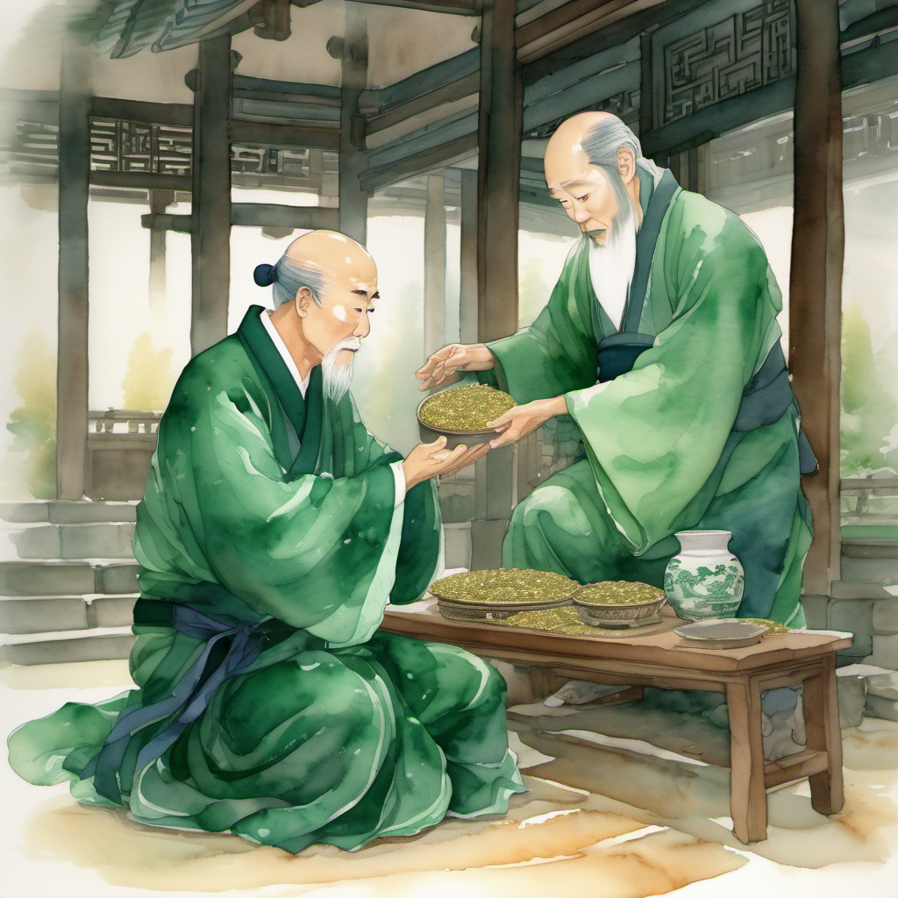
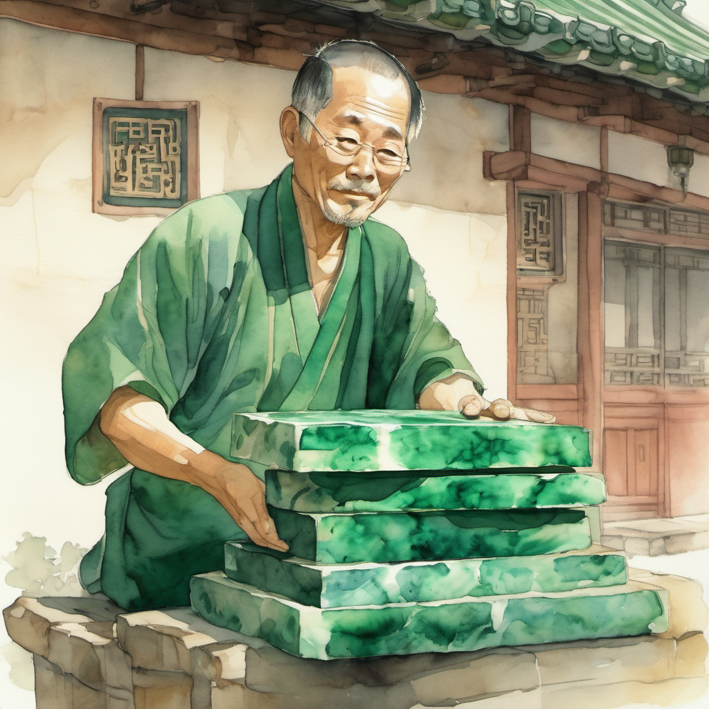
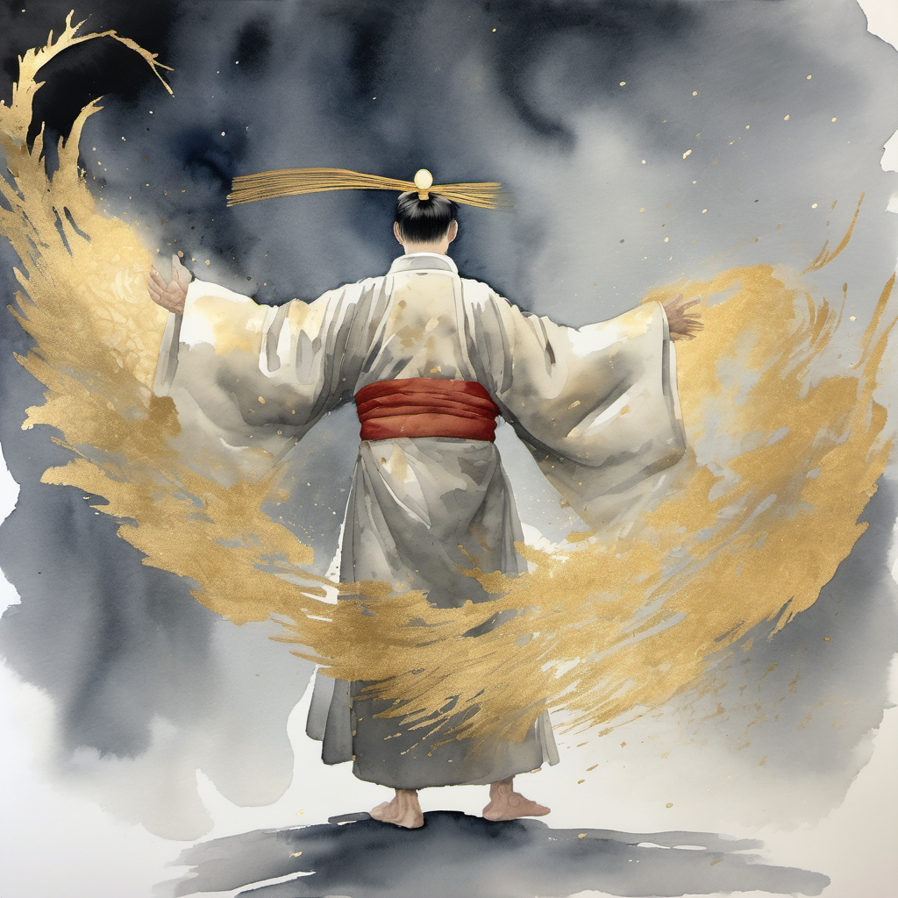
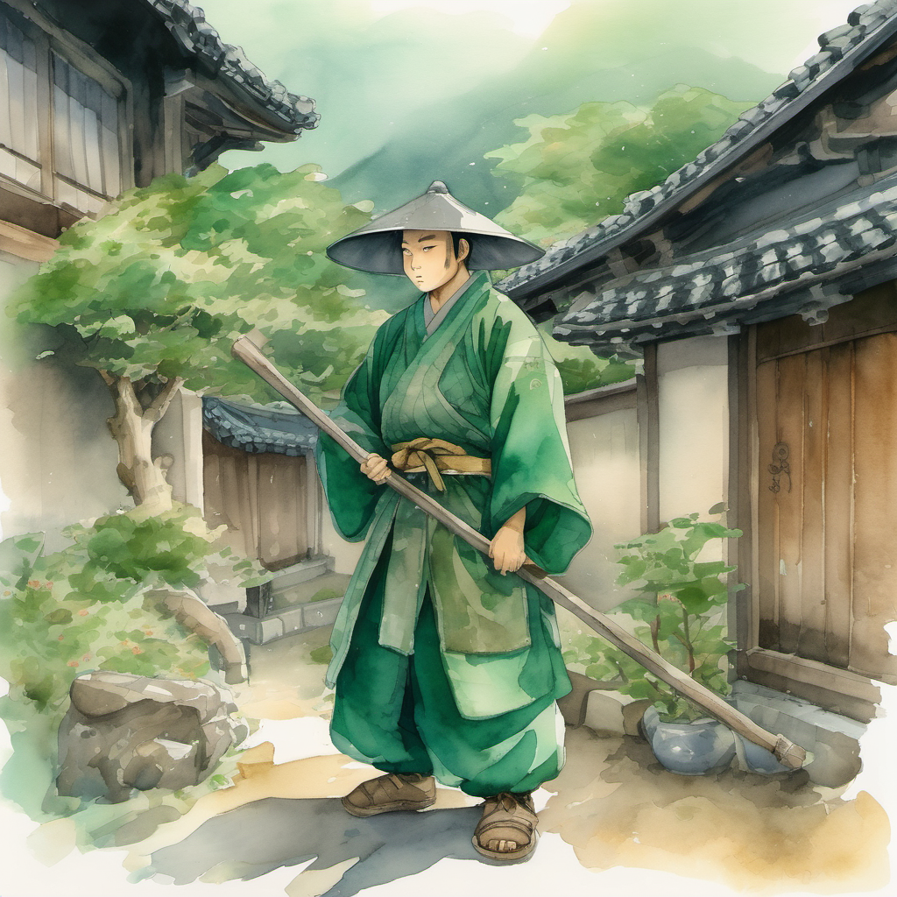
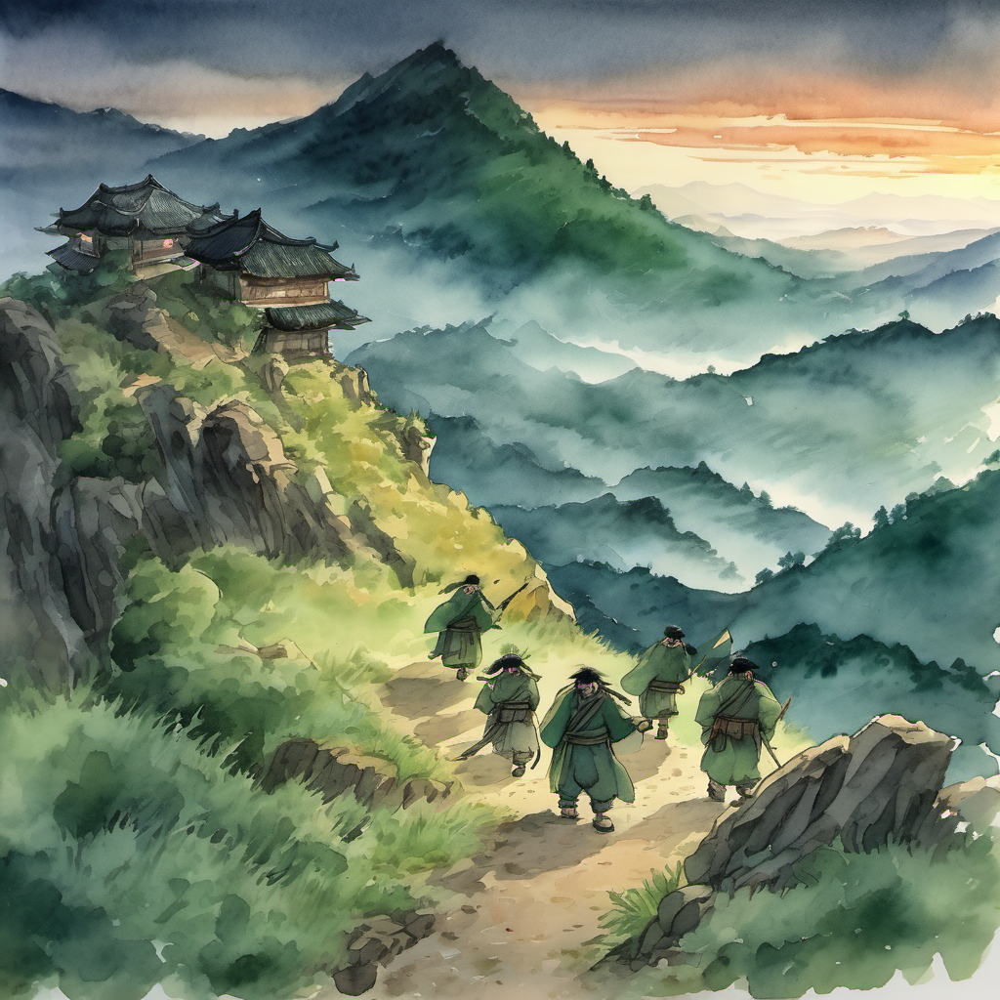

저녁 노을 — 잘린 매화나무 다섯 그루

13화의 청천이 안개 속으로 사라진 그날 저녁. 객점 마당의 평상에 정주가 한 번 더 앉았다. 막걸리 사발이 한 번 비고 두 번 비고 세 번 비었다. 무릎의 시큰함이 한 번 잦아졌다 — 본 박자가 정상.
평원의 노을이 한 번 객점 마당의 매화나무 다섯 그루의 잘린 꼭대기 위로 한 번 내려앉았다. 매화꽃은 11화의 무휼 회전 베기로 한 번 다 떨어진 다음이었지만, 본 화의 노을 빛이 한 번 그 잘린 꼭대기에 꽃 한 송이씩을 다시 그려 주는 듯했다.
무당파 본진 50여 명 도열 ⭐

객점 안채의 문이 한 번 열렸다. 무당파 본 본 사부 — 무명. 그 옆에 — 도성. 그 뒤에 — 청천. 청천의 손에는 — 13화 부러진 검 한 자루가 한 번 그대로 두 손에 받쳐져 있었다. 청천의 뒤에 — 4명의 청년 검수. 그 뒤에 — 무당파 본진의 검수 50여 명.
50여 명 동시 포권의 예

무명이 한 번 깊게 포권의 예를 올렸다. 도성도 한 번 따라 했다. 청천도 한 번 따라 했다. 4명의 청년 검수도 한 번 따라 했다. 50여 명의 무당파 본진도 한 번에 포권의 예를 올렸다. 객점 마당의 노을 빛이 한 번 그 모든 도복의 짙은 회색 위로 한 번 황금빛으로 내려앉았다.
생명주 비단(生命珠 緋緞) 전수 ⭐⭐⭐

도성의 두 손에 한 묶음의 비단이 한 번 받쳐져 있었다. 비단은 다섯 단으로 한 번 정렬되어 있었다. 색은 — 짙은 — 녹색. 본 비단의 본 본 결이 한 번 평원의 노을 빛에 한 번 깊게 빛났다.
5cm 어긋난 한 단 = 결계의 키

30년 차 게임 개발자의 — 눈에 한 번에 — 그 — 5cm 어긋난 — 한 단의 — 본 본 결이 한 번 보였다. 본 비단 다섯 단이 — 본 권 — 38화 — 어디선가 — 한 번 — 결계의 — 본 본 — 키로 — 한 번 — 활용될 사실.
홍대걸 박자 강타 — 50여 명 의식 인장

홍대걸이 한 번 박세린 GDD knight 노드 B 1단계 — 박자 강타 — 의식 톤 — 한 번 — 갈겼다. 50여 명의 — 무당파 — 본진 — 등 가운데에 한 번에 — 황금빛 — 손바닥 자국이 한 번 박혔다. 11화의 — 5명에게 박힌 — 자국과는 한 번 다른 톤. 본 화의 자국은 한 번 의식의 — 인장.
H빔에 비단 두름 — "따땃함니더" ⭐

정주가 한 번 비단 다섯 단을 한 번 무휼의 H빔에 한 번 한 단씩 한 번씩 둘러 줬다. 5cm 어긋난 한 단은 한 번 가운데에. 한 박씩 — 반 박씩 — 한 박 반씩 — 반 박씩 — 한 박씩. 4박 + 1박. 무당파의 — 본 본 — 결.
60kg의 H빔에 5단의 — 짙은 녹색 — 비단이 한 번 둘려 있었다. 거구의 — 어깨가 한 번 더 — 한 단계 — 따뜻해 보였다.
평원 진입 — 거지 떼 그림자

다섯 명이 한 번에 일어섰다. 객점 마당을 한 번 나섰다. 평원의 노을이 한 번 그들의 등 뒤로 한 번 깊게 깔렸다. 산을 한 번 내려갔다.
산 아래로 — 평원이 — 한 번 — 펼쳐졌다. 평원 끝에서 — 누더기를 걸친 — 거지 떼의 — 그림자가 — 한 번 — 새까맣게 — 깔려 — 있었다.
본 비단 다섯 단이 한 번 무휼의 H빔의 어깨 위에서 한 번 짙은 녹색으로 빛났다. 본 비단의 본 본 결이 본 권의 — 한 — 후속 — 결계의 — 한 — 키로 — 한 번 — 활용될 — 그 — 시점이 — 본 권의 — 38화 — 곤륜산 — 중턱의 — 한 — 폭설 — 어디선가 — 한 번 — 도착할 — 결.
(2권 14화 끝)